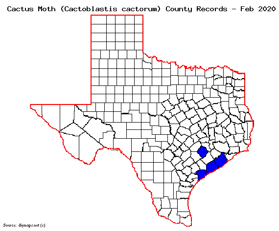
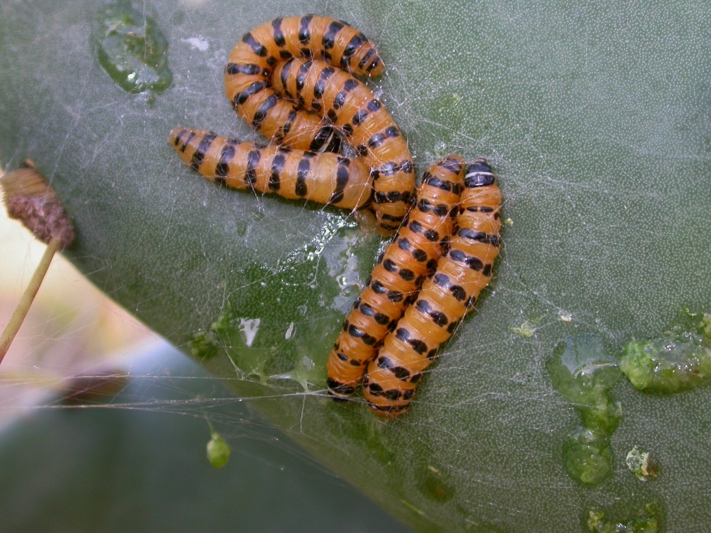
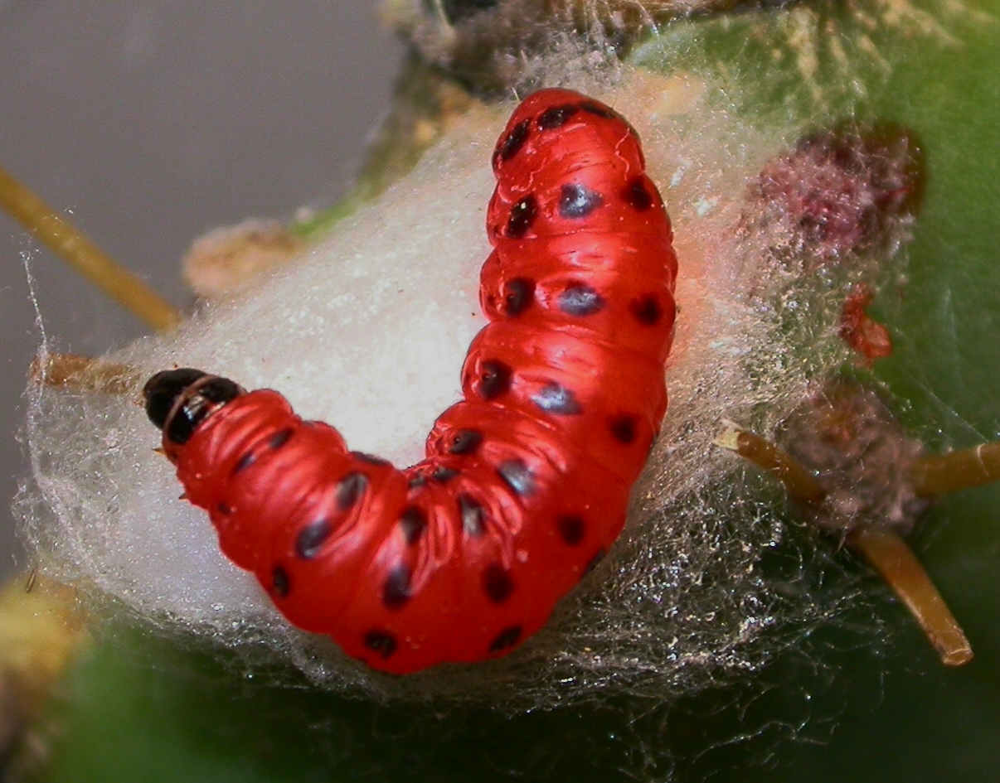

Return to Texas Entomology - Compiled by Mike Quinn
|  |
|  |
|  |
Featured Creatures - Habeck et al., 2016 - Univ. Florida
"Sticking It to the South American Cactus Moth" - Sept. 2006 issue of Agricultural Research magazine.
BugGuide - 2020
Texas Invasive Species Network - TISN
Blog:
A prickly situation - Mike Merchant, 2020
Power Points:
A brief history of Cactoblastis cactorum and its effects on Florida native Opuntia - Heather Jezorek & Peter Stiling, University of South Florida
Predicting the Distribution of the Invasive Cactus Moth, Cactoblastis cactorum, and its Major Host Plant, Opuntia stricta, in Florida - Kristen Sauby, 2014
References:
Awad, J., Hodges, A., Hight, S.D., Srivastava, M., Howe, A., Rohig, E. 2019. Laboratory rearing and sex ratio of Apanteles opuntiarum (Hymenoptera: Braconidae), a potential biocontrol agent of Cactoblastis cactorum (Lepidoptera: Pyralidae). Florida Entomologist. 102(1): 216-221. (Full Text)
Chavez-Ramirez F, Wang XG, Jones K, Hewitt D, Felker P. 1997. Ecological characterization of Opuntia clones in South Texas: Implications for wildlife herbivory and frugivory. Journal of the Professional Association for Cactus Development 2: 9-19. (Full PDF)
Hight, S.D., J.E. Carpenter, and K.A. Bloem. 2002. Expanding geographical range of Cactoblastis cactorum (Lepidoptera: Pyralidae) in North America. Florida Entomologist. 85(3): 527-529. (Full PDF)
Solis, M.A., Hight, S.D., Gordon, D.R. 2004. Tracking the cactus moth, Cactoblastis cactorum Berg., as it flies and eats its way westward in the US. News of the Lepidopterists' Society, 46: 3-5. (Full PDF)
Zimmermann, H.G., Moran, V.C., & Hoffmann, J.H. 2000. The renowned cactus moth, Cactoblastis cactorum: its natural history and threat to native Opuntia floras in Mexico and the United States of America. Diversity and Distributions, 6(5): 259-269. (Full PDF)
04 April 2020 © Mike Quinn / entomike@gmail.com / Texas Entomology / Texas Lep Information